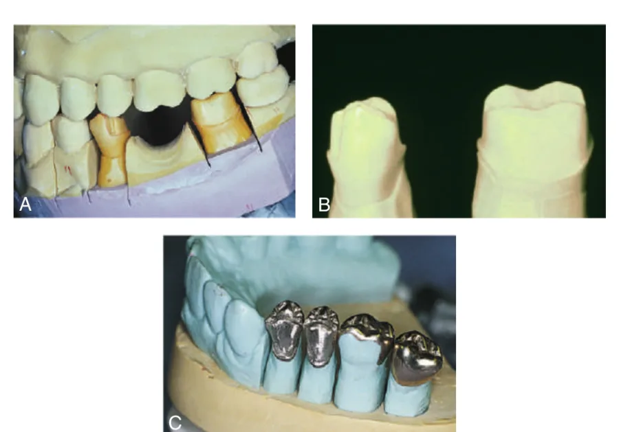

نسخه استخراجشده؛ ترجمه یا تأیید علمی انجام نشده است. وضعیت: captured
چرا کست و دای لازم است: «چون ساخت مستقیم ترمیمهای دائمی برای ترمیمهای خارجتاجی ناراحتکننده و زمانبر است، عملاً همهی الگوهای مومی در آزمایشگاه ساخته میشوند. تکنیک غیرمستقیم به بازتولید دقیقی از دندان تراشیدهشده، بافتهای نرم پیرامون، و دندانهای مجاور و مقابل نیاز دارد.»
و یک توصیهی آموزشی مهم: «برای یادگیری استفادهی درست از کستهای مجازی، باید اصول زیربنایی سیستمهای متعارف کست و دای فهمیده شوند. سیستمهای مجازی همان اطلاعات را در قالبهای سهبعدی مدل میکنند.»
و الزامات دای — با یک عدد کلیدی:
و شیمی گچ — کلسیناسیون: «همیهیدرات با گرم کردن دیهیدرات تحت شرایط کنترلشده برای خارج کردن بخشی از آب تبلور ساخته میشود — فرایندی به نام کلسیناسیون. تفاوتهای میان انواع گچ دندانی به کلسیناسیون نسبت داده میشوند.»
و اعداد نسبت آب به پودر — منشأ برتری دایاستون: «خواص فیزیکی دایاستون بر استون دندانی و پلاستر برتری دارد چون آب کمتری برای به دست آوردن مخلوط بهقدر کافی سیال لازم است. بنابراین ۱۰۰ گرم پلاستر به ۴۵ تا ۵۰ میلیلیتر آب، و ۱۰۰ گرم استون دندانی به ۳۰ تا ۳۵ میلیلیتر آب نیاز دارد.»
و دقت جزئیات: «بازتولید جزئیات سطحی با محصولات گچی نوع IV و نوع V برای پروتز ثابت قابل قبول است. این مواد قادرند خطی به عرض ۲۰ میکرومتر را طبق مشخصات شمارهی ۱۹ ADA بازتولید کنند.»
ولی یک هشدار سازگاری: «همهی برندهای دایاستون با همهی برندهای مادهی قالبگیری سازگار نیستند، و اگر بازتولید جزئیات سطحی ضعیف باشد، استفاده از محصول جایگزین ممکن است مشکل را حل کند.»
و یک خطای پنهان خیساندن: «هرچند کست ظاهراً نامحلول به نظر میرسد، وقتی غوطهور شود، گچ بهآهستگی حل میشود، که جزئیات سطحی کست اصلی را خراب میکند.» و راهحل: «اگر خیساندن لازم است، باید در آبی که با دوغاب پلاستر اشباع شده و تنها بهقدر لازم برای رسیدن به درجهی مطلوب ترشدگی انجام شود.»
و بزرگترین عیب گچ: «بزرگترین عیب گچ، مقاومت نسبتاً ضعیفش در برابر سایش است.» و راههای جبرانش: «سختکنندههای گچ مانند سیلیکای کلوئیدی — که «در واقع اثر نسبتاً کمی بر سختی استون دارند ولی مقاومت سایشی را بهبود میبخشند، برخی تا ۱۰۰ درصد» — با هزینهی «افزایش اندکی در انبساط ست شدن». و رویکرد جایگزین: «آغشته کردن سطح دای متخلخل با رزینی با ویسکوزیتهی پایین مانند سیانوآکریلات» — با این احتیاط که رزین باید «ویسکوزیتهی پایین» داشته باشد «تا لایهی رزین ضخامت معناداری نداشته باشد».
و دایهای رزینی: عمدتاً اپوکسی، و گاهی پلیاورتان. «اپوکسی میتواند در دمای اتاق و بدون تجهیزات گران یا پیچیده پلیمریزه شود، و نتیجه فرمی است که از نظر ابعادی بهطور معقولی پایدار است. مقاومت سایشیاش چندین برابر محصولات گچی است.»
ولی دو عیبش: «گرانتر از گچ است و حین پلیمریزاسیون دچار انقباض میشود» — که «با تنظیمهای اندک در سایر مراحل ساخت ترمیم قابل جبران است». و یک تقارن جالب: «مقدار انقباض هنگام پلیمریزاسیون از نظر کمّی تقریباً برابر انبساطی است که در ساخت مدل با گچ رخ میدهد.»
و یک تفاوت بالینی مهم: «بهطور کلی بازتولید جزئیات بهتر است؛ با این حال پروتزهای ساختهشده روی دایهای رزینی تمایل دارند تنگتر جا بیفتند نسبت به آنهایی که روی دایهای گچی ساخته شدهاند.»
و دای دیجیتال — با یک قید صادقانه: «هرچند یک دای دیجیتال ممکن است وقتی اباتمنتهای متعدد درگیرند به آن دقت نباشد، در ترمیم یک دندان تکی دقت عالی فراهم میکنند.»
و چهار ضعف سنتی که حل میکند: «دایهای دیجیتال ساییده یا آسیب نمیبینند حین ساخت ترمیم؛ کالیبراسیون روتین تجهیزات مسائل انبساط یا انقباض ذاتی مواد سنتی را حل میکند؛ یک فایل دیجیتال میتواند بارها بدون نیاز به تکرارسازی استفاده شود و بیدرنگ میان دندانپزشک و تکنسین به اشتراک گذاشته شود، بدون زمان هدررفتهی حمل؛ و روشهای آزمایشگاهی ممکن است کمتر حساس به تکنیک و آسانتر برای یادگیری باشند.»

سیستم دای متحرک: «دای جزء یکپارچهای از کست نهایی است و میتواند برای تسهیل دسترسی از کست برداشته شود. جایگذاری دقیق دوبارهی دای در کست نهایی برای موفقیت این سیستم حیاتی است و معمولاً با پینها یا داولهای برنجی انجام میشود.»
و یک قاعدهی هندسی ساده ولی حیاتی: «وقتی یک داول به کار میرود، باید دستکم یک سطح تخت داشته باشد تا مقاومت در برابر چرخش فراهم شود.» و در روشهای جایگزین مانند سیستم Pindex، «داولهای متعدد یا درهمقفلشونده برای تأمین همان مقاومت چرخشی به کار میروند».
و ساخت دومرحلهای: «کست در دو ریختن استون نوع IV یا V با رنگهای متضاد ساخته میشود: نخستین دندانها را بازتولید میکند و دومی بیس کست را میسازد.» و یک ملاحظهی مادی: «استون نوع V با انبساط بیشتر، به دایاسپیسینگ کمتری نیاز دارد تا فضای مناسب برای عامل سمان به دست آید.» و پیش از ریختن لایهی دوم، ناحیهی برداشتنی «با عامل جداکننده پوشیده میشود»، در حالی که «در سایر نواحی زیرکاتهایی فراهم میشود تا از جدایش ناخواستهی دو ریختن جلوگیری گردد».
و یافتهی مقایسهای: «در یک مطالعه، پژوهشگران دقت مشابهی در چهار سیستم دای متحرک یافتند، هرچند سیستم Pindex کمترین حرکت افقی و پینهای داول برنجی کمترین اختلاف نشست اکلوزوجینجیوال را نشان دادند.»
و سیستم کست یکپارچه با دای منفرد — مزیت اصلیاش: «مزیت اولیهاش سادگی آن است. همچنین ممکن است اندکی دقیقتر باشد.»
و روشش: «وقتی قالب رضایتبخش تشخیص داده شد، استون نوع IV یا V تنها در ناحیهی تراشها ریخته میشود. پس از ست شدن، جدا میشود. سپس ریختن دوم از کل قوس انجام میگیرد.»
و یک اصل که باید حفظ شود: «نخستین ریختن، دقیقترین است» — و به همین دلیل «ضروری است که لبههای الگوی مومی بلافاصله پیش از اینوست شدن الگو، روی دای ریختن اول بازآداپت شوند».
و توالی کار روی الگو: «الگوی مومی روی ریختن اول (دای) آغاز میشود و سپس برای پالایش کانتورهای اگزیال و آناتومی اکلوزال به کست آرتیکولهشده منتقل میگردد. وقتی کامل شد، به دای بازگردانده میشود تا لبهها بلافاصله پیش از اینوست بازآداپت شوند.»
و مزایای افزودهی کست یکپارچه: «کست نهایی تنها به تریم حداقلی نیاز دارد. همچنین چون بافتهای لثهای پیرامون دندانهای تراشیدهشده دستنخورده باقی میمانند، میتوانند راهنمای شکلدهی تماس بافتی پانتیکها باشند و توسعهی کانتورهای اگزیال ترمیمها را تسهیل کنند.» و «آموزش پرسنل پشتیبان برای این سیستم آسانتر است».
و مبادلهی اصلی: «کست یکپارچه خطاهای ناشی از نشست ناقص یک دای متحرک را حذف میکند» و اجزای پروتز میتوانند «از روی کست ایندکس شوند». ولی «اگر پروتز بهدقت ساخته نشده باشد، دندانهای اباتمنت استونی میتوانند بهآسانی شکسته شوند، که مراحل بعدی را دشوارتر میکند».
و عیب دیگرش: «چون الگو بارها میان کست یکپارچه و دای منفرد جابهجا میشود، خطر شکستن الگو در مقایسه با سیستمهای دای متحرک افزایش مییابد.» و «پس از ریختهگری، ممکن است در نشاندن ریختگی فلزی روی کست یکپارچه دشواری پیش آید و لازم شود اندکی ریلیف شود».
و در مقابل، مزیت اصلی سیستم دای متحرک: «به دستکاری کمتری از الگوی مومی نیاز دارد، که شانس شکستن الگو را حین ساخت کاهش میدهد. افزون بر آن، دستکاری ترمیمهای پرسلنی آسانتر است، بهویژه اگر لبهی لبیال پرسلنی استفاده شود.» و به همین دلایل، «بسیاری از تکنسینها باور دارند گامهای افزودهی ساخت کست با داول و دای متحرک ارزشش را دارد».
و داوری نهایی: «انتخاب یک تکنیک خاص با ترجیح شخصی تکنسین و ارزیابی مزایا و معایب هر روش تعیین میشود. اگر درست به کار روند، همهی سیستمهای موجود به دقت بالینی قابل قبول میرسند.» و توصیهی عملی: «وقتی دندانپزشک رابطهی جدیدی با تکنسینی برقرار میکند، مهم است تعیین شود کدام سیستمهای کست و دای ترجیح داده میشوند، و چرا.»